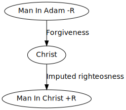

Dr. Byron Morgan
Romans 8:28-30
How do I know that I’m saved?
Others fear that they have done something that causes us to lose our salvation and live on eggshells.
v31.
“these things” refers to the same “things” in v32.
“those who love God” - this is not a warm fuzzy thing we get (not a spiritual high). This is evidence (proof) that we are saved. 1 John 4:19. God first loved us, and then we loved Him. If I’m obedient to Him then I want to please Him and that shows that I love Him.
2 types of love in marriage:
Romans 8:28,30
There is indeed a call to ministry - however this is not the calling noted in v30.
2 Peter 3:9
Can we honestly I am what I am by God’s grace? Are there things in my life that can only be explained by the supernatural?
What are your interests these days? Is it to know Christ? Is it to participate in the growth of God’s kingdom?
What has made you what you are? Are you convicted by sin? Conviction is like an annoying smoke alarm. 1 Thes 2:13
God, before the foundation of the world, has marked out a plan of redemption for us. For example, a soccer coach already determines what plays and team movement is to occur and so he sets up practices to direct the team to do this.
Romans 8:29 - Jesus was the first born of several brothers. We are conformed to the image of Christ because we are brothers; we have the same DNA.
 Romans 8:30
3 things God could have done to address sin:
Romans 3:21-22
God doesn’t grade our righteousness on a curve - infact there isn’t even a scale: it’s a binary scale.
2 Cor 5:21
Justification doesn’t mean “not guilty” but more: you are completely righteous before God.
Romans 8:30 - you are glorified.
In Romans 8:18,21,23 Paul is talking about what will happen to us during the millenial.
But in Romans 8:30 is a timeless statement - in God’s plan it is already considered done (modus ponens?).